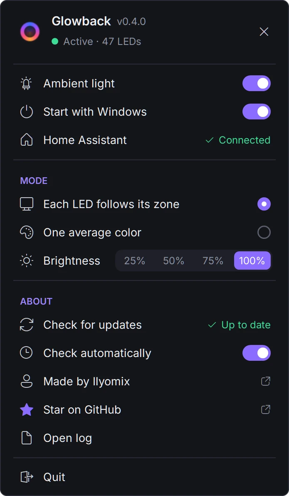
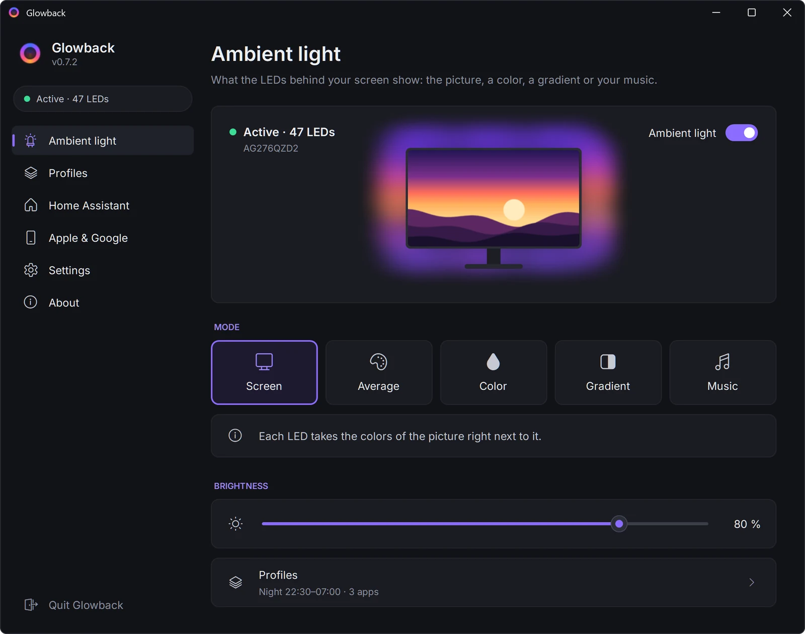
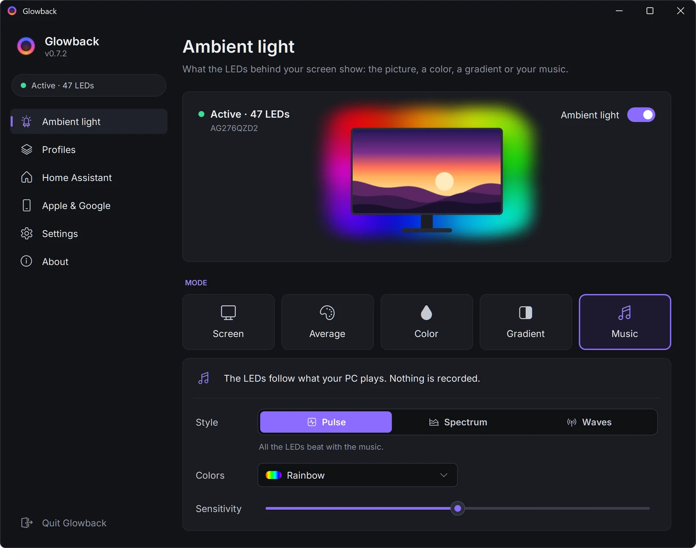
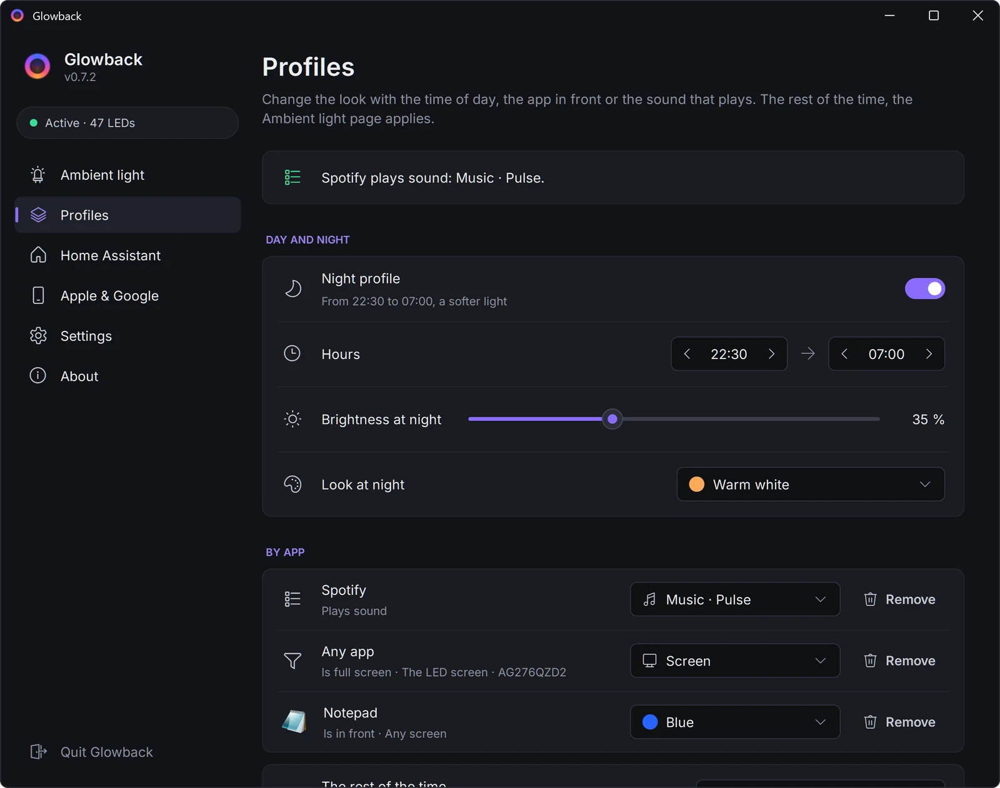
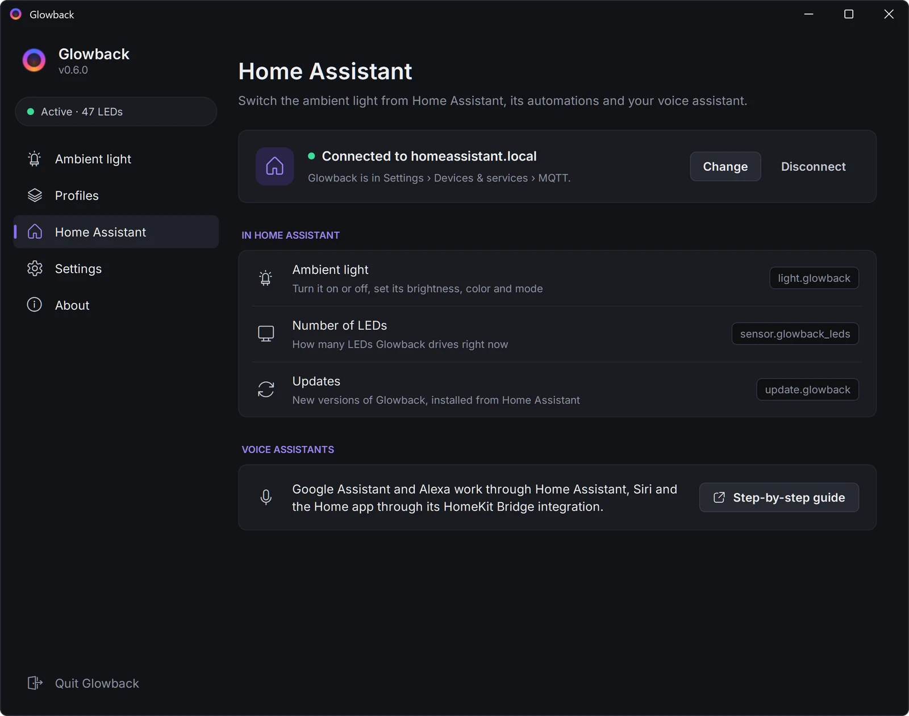
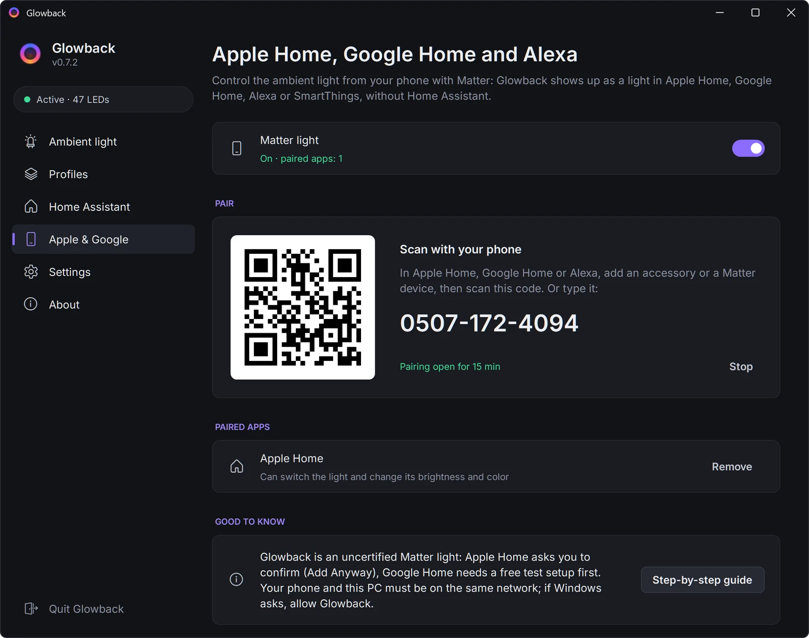
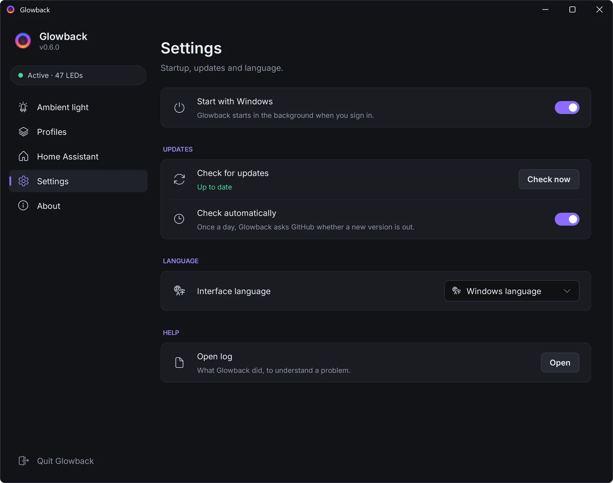
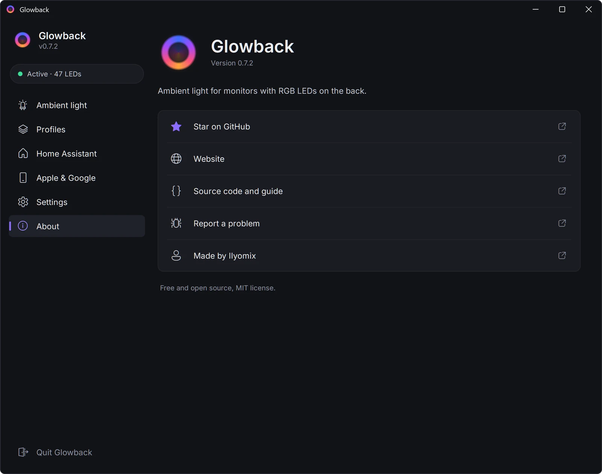

Ambient light for the RGB LEDs on the back of your monitor.
Glowback captures your screen and gives each LED behind it the colour of the picture right in front of it, live. Your wall becomes part of the image.



One app, five looks
Start Glowback from the Start menu and its window opens, with a live preview of your screen and of the light behind it. Choose what the LEDs show: the screen, its average colour, one colour, a gradient or your music. Close the window and Glowback keeps running next to the clock.







How it works
Three steps, thirty times per second, in about half a millisecond of CPU.
Capture
The GPU hands over every new frame (DXGI, HDR included) and shrinks it to a tiny colour grid. Movie black bars are ignored.
Map
Each LED reports its physical position. Glowback projects it onto the nearest edge of the screen, like an Ambilight TV.
Light
Colours are smoothed, brightened in dark scenes and sent to the LEDs over USB. Nothing leaves your PC.
Everything you'd expect from a real app
One zone per LED
Every LED follows its own part of the picture, or switch to a single average colour.
Movies, games, HDR
Fullscreen video and games, HDR desktops, letterbox detection.
Colour, gradient or music
Besides the screen: one colour, a gradient that can flow, or LEDs that follow your music as a pulse, a spectrum or waves.
Day, night and every app
A softer light at night, and a look per app: music while Spotify plays, the screen for games, blue in your code editor.
Native Windows app
Its own window, a quick panel next to the clock, an installer, start with Windows and verified updates in one click.
Featherweight
About 0.5 ms of CPU per frame. The Python version is one file, zero dependencies.
Part of your smart home
Glowback shows up as a light in Apple Home, Google Home and Alexa through Matter, or in Home Assistant over MQTT. Your phone, your automations and your voice assistant can turn it on and off, dim it or change its colour, and Glowback stays in sync. Off from a phone or Home Assistant turns the LEDs dark; Glowback's own switch still pauses, giving the LEDs back their own effect.
Home Assistant
light.glowback
On/off, brightness, colour, and the look as an effect (Zones, Average, Color, Gradient or Music). Plus an update entity to see and install new versions, and an LED count sensor.
Google Assistant
“Hey Google, make Glowback blue”
Through Google Home with Matter, or through Home Assistant: Home Assistant Cloud or the manual setup.
Alexa
“Alexa, turn off Glowback”
Through the Alexa app with Matter, or through Home Assistant: Home Assistant Cloud or the manual setup.
Siri and Apple Home
“Hey Siri, turn on Glowback”
Straight from the Home app with Matter, or through Home Assistant's HomeKit Bridge: on/off, brightness and colour. Apple Home has no light effects, so the other looks stay in Glowback.
Apple Home, Google Home and Alexa, with Matter
No Home Assistant needed. On Glowback's Apple & Google page, turn on Matter light. Then, in Apple Home, Google Home, Alexa or another Matter app, add an accessory or a Matter device and scan the QR code, or type the 11-digit code. Several apps can share the light: pair each one the same way.
Glowback isn't certified by the Connectivity Standards Alliance: Apple Home asks you to confirm with Add Anyway, and Google Home first needs a free test integration in the Google Home Developer Console (vendor ID 0xFFF1, product ID 0x8000). Tested with Apple Home on an iPhone and a home hub; Google Home and Alexa haven't been tried yet. Everything stays on your local network.
- On and off
- Brightness
- A colour or a white
- Identify: the LEDs blink
Set up Home Assistant from the panel
Install the Mosquitto broker app in Home Assistant. Then click Home Assistant in Glowback's panel and enter the address, port, user and password.
The MQTT client is built in, and the password is encrypted for your Windows account (DPAPI).
The quick panel, next to the clock
One click on the icon next to the clock opens the quick panel, a double click brings the window back. Settings apply instantly, and the panel stays open while you tweak them.
- Live status: active, paused, number of LEDs
- Open Glowback: the window, one click away
- Ambient light and start with Windows switches
- Profiles and Home Assistant, with their status at a glance
- The five looks in one tap: screen, average, colour, gradient, music
- Brightness in one tap: 25, 50, 75 or 100 %
- Check for updates in one click, or let it check every day
Does my monitor work?
Glowback isn't tied to one brand. If one of these is true, it works.
Windows Dynamic Lighting
Your monitor shows up in Settings → Personalization → Dynamic Lighting. Glowback drives it directly.
OpenRGB
Your LEDs are supported by OpenRGB. Start its SDK server and Glowback finds them automatically.
Neither?
Stick an LED strip behind the screen and drive it with a $5 RP2040 board.
Read the DIY guide →Tested so far: AOC AGON PRO AG276QZD2 (47 LEDs). Report your monitor →
Questions
Which monitors are supported?
Any monitor whose rear RGB lighting can be controlled through Windows Dynamic Lighting or OpenRGB. Run glowback --list, or look for your monitor in Settings → Personalization → Dynamic Lighting.
Do I need to turn anything off?
Yes: turn off Windows Dynamic Lighting for your monitor (Settings → Personalization → Dynamic Lighting), otherwise Windows and Glowback fight over the LEDs.
Windows says it protected my PC. Is it safe?
The installer isn't code-signed yet, so SmartScreen doesn't know it. Click More info → Run anyway. The source code and every build are public on GitHub, and in-app updates are verified against published SHA-256 checksums.
Does it work with HDR, fullscreen games and movies?
Yes. GPU capture handles fullscreen games, video players and HDR desktops, and movie black bars are ignored. DRM-protected streams are usually blacked out by Windows for every capture tool.
Can it follow the screen only in games or movies?
Yes. On the Profiles page, give each app a look while it runs, is in front, is full screen or plays sound: the screen for any app full screen on the LED screen, for example. Then choose what the LEDs show the rest of the time: the Ambient light page's look, their own effect, or nothing. A night profile can also lower the brightness at the hours you pick. Store apps like Netflix and Disney+ are recognised, and the checks stay on your PC. From the command line: glowback --sync-when foreground:vlc.exe.
Can the LEDs follow my music?
Yes. Choose the Music look: the LEDs pulse, show the spectrum (bass at the bottom, treble at the top) or send waves with the sound your PC plays, from any app. Glowback listens to Windows' default output in memory: no microphone, nothing recorded. To switch to it by itself, add a profile such as Spotify · Plays sound · Music.
Does it work without Home Assistant?
Yes. Glowback works on its own, and Home Assistant is optional. To control it from your phone without Home Assistant, open the Apple & Google page, turn on Matter light and scan the QR code (or type the 11-digit code) in Apple Home, Google Home or Alexa. Glowback isn't certified, so Apple Home asks you to confirm with Add Anyway, and Google Home first needs a free test integration in the Google Home Developer Console (vendor ID 0xFFF1, product ID 0x8000). Tested with Apple Home on an iPhone and a home hub; Google Home and Alexa haven't been tried yet.
Does it work with Siri, Google Assistant or Alexa?
Yes. With Matter, Siri, Google Assistant and Alexa reach Glowback through Apple Home, Google Home and the Alexa app. Or through Home Assistant: Glowback shows up there as a light over MQTT, using Home Assistant's Mosquitto broker app; Google Assistant and Alexa then work through Home Assistant Cloud or Home Assistant's manual setup, and Siri through the HomeKit Bridge integration. Apple Home has no light effects, so the other looks stay in Glowback.
How do I uninstall it?
Settings → Apps → Installed apps → Glowback → Uninstall. The LEDs go back to the device's own effect.
Make your wall part of the picture.
Free, open source, ready in a minute.